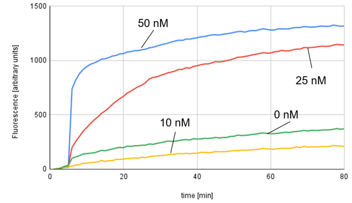

Overview
実証のために実験を行ったみたいな文章を適当に入れる
Entopy Driven Circuit testing
Objective
エントロピードリブン回路の増幅効果を実際に確認すること。
Method
私たちは4つのcatalyst濃度の異なるサンプルを用意し、比較した。それぞれ、catalyst濃度は50nM(Sample#1)、25nM(Sample#2)、10nM(Sample#3)、0nM(sample#4)に調整した。
outputの存在を確認する手法として下の図のようなレポーター分子を用いた。outputが存在すると、レポーター分子に結合し、鎖置換反応を引き起こします。この反応の結果として、レポーター分子から蛍光を消す分子（BHQ）が離れ、蛍光分子（FAM）が解放されて発生する蛍光をリアルタイムPCRで計測した。
計測のサイクルは1分間に1回で80分間行い、温度は25℃に設定した。
Result

全体の傾向として(10nMと0nMのサンプルでは逆転が起きているが)、catalyst濃度が高いほどoutputの生成速度が速く、最終的なoutputの濃度も高くなっていることが確認された。
Discussion and Next Step
エントロピードリブン回路の増幅効果が確認された。ただし、蛍光強度による測定であり、最終的なoutputの濃度に関しては不透明であるため、濃度の測定については別途実験を行う。
DNA Hydrogel Formation testing
Objective
設計した配列でDNAハイドロゲルが形成されることを確認すること。
Method
バッファー溶液として、下の表にしめすようにMgCl2の入ったもの(Buffer#1)と、NaClの入ったもの(Buffer#2)の2種類を用意した。
Table2.a: Buffer#1 Recipe

Table2.b: Buffer#2 Recipe

DesignのAppendixに示したDNAハイドロゲルの各配列の濃度が400μM、全体として20μLになるように4つのDNA溶液とバッファー溶液、純水を混合して冷蔵庫に放置した後、ゲルができるかどうかを確認した。
また、同じ溶液に対して、95℃(5分)、その後1分ごとに-1℃で4℃まで温度を下げるアニーリングを行った。
Table2.c: Solution Recipe

Result
2種類の溶液を冷蔵庫から取り出して、ピペットで触って感触を確かめたところ、どちらもゲル化せずに液体のままであった。
また、アニーリング後の溶液についてもピペットで触って感触を確かめたところ、どちらもゲル化せずに液体のままであった。
Discussion and Next Step
混合溶液はゲル化せずに液体のままであったが、マクロな観察だけではミクロな結合状態（一本鎖／二本鎖／高次集合体）が不明である。そこで、次の手段として電気泳動を用いた分子レベルの測定を行う。